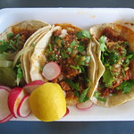

<!DOCTYPE html>
<html lang="en"></html>
<head>
    <meta charset="UTF-8">
    <meta name="viewport" content="width=device-width, initial-scale=1.0">
    <meta http-equiv="X-UA-Compatible" content="ie=edge">
    <title>Tacos Recipe</title> 
</head>
<body>
    <h1>Tacos</h1>
<a href="../index.html">Back to homepage</a> / <a href="lasagna.html">Lasagna</a> / <a href="birria.html">Birria</a> / <a href="pizza.html">Pizza</a> / <a href="tacos.html"><b>Tacos</b></a>
<p>Tacos are a traditional Mexican dish consisting of a folded or rolled tortilla filled with various ingredients. The tortilla can be made from corn or flour and is typically soft, although it can also be crispy. Common fillings for tacos include seasoned meat (such as beef, chicken, pork, or fish), beans, cheese, lettuce, tomatoes, onions, and various sauces like salsa or guacamole. Tacos are often garnished with fresh cilantro, lime juice, and jalapeños for added flavor. They are a versatile and popular food enjoyed worldwide, often served as street food or in restaurants.</p>
           
           <p>This is a family favorite on Taco Tuesday.</p>
              <h2>Ingredients</h2>
              <ul>
                  <li>1 lb ground beef</li>
                  <li>1 small onion, finely chopped</li>
                  <li>2 cloves garlic, minced</li>
                  <li>1 packet taco seasoning mix</li>
                  <li>2/3 cup water</li>
                  <li>8 small flour or corn tortillas</li>
                  <li>1 cup shredded lettuce</li>
                  <li>1 cup diced tomatoes</li>
                  <li>1 cup shredded cheddar cheese</li>
                  <li>1/2 cup sour cream</li>
                  <li>1/2 cup salsa</li>
                  <li>Optional toppings: sliced jalapeños, chopped cilantro, avocado slices</li>
                </ul>
                <h2>Directions</h2>
                <ol>
                    <li>In a large skillet over medium heat, cook the ground beef until browned. Drain any excess fat.</li>
                    <li>Add the chopped onion and minced garlic to the skillet with the beef. Cook until the onion is softened, about 3-4 minutes.</li>
                    <li>Stir in the taco seasoning mix and water. Simmer for about 5 minutes until the mixture thickens.</li>
                    <li>While the beef mixture is simmering, warm the tortillas in a dry skillet over medium heat for about 30 seconds on each side or wrap them in foil and heat them in a preheated oven at 350°F (175°C) for about 10 minutes.</li>
                    <li>To assemble the tacos, spoon some of the beef mixture onto each tortilla. Top with shredded lettuce, diced tomatoes, shredded cheese, a dollop of sour cream, and a spoonful of salsa. Add any optional toppings you like.</li>
                    <li>Serve the tacos immediately while they are warm. Enjoy!</li>
                </ol>
           </body>
    </html>